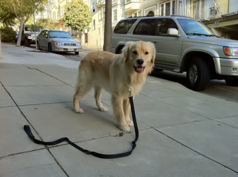

接口边界：路由、内联大小，以及 Foundry 与 fal 的能力差距
不比画质，只确认接入时的接口边界。重点是：fal 原生平台标记支持、但 Microsoft Foundry 文档没有列出的能力，在 Foundry 上到底能不能调用。面向 Azure 客户时，以 Foundry 的实测结果为准。
测什么、怎么测
路由：拿 5 个旧任务分别用带 /v1 和不带 /v1 的地址各查一次状态和结果，再用不带 /v1 的地址提交一次新任务。内联大小：同一张小 JPEG 填充元数据到 4、8、12、16、24、64、128 MiB 作为首帧提交（像素不变）。另外补测 H3 两档和 LTX Fast 的首尾帧图生。
能力差距：用同一个 Foundry 资源和 Key，对 fal 原生平台有、Foundry 文档没列的四项各发一次最短请求（2 秒 / 3 秒、最低分辨率），成功受理就跑到出片并验片。

| 探测 | 结果 |
|---|---|
| 带 /v1 的 GET 状态 / 结果 | 10／10 返回 200 |
| 不带 /v1 的 GET 状态 / 结果 | 10／10 返回 400 |
| 不带 /v1 的 POST 提交 | 400 unknown_model |
| 内联 JPEG 4 / 8 / 12 / 16 / 24 MiB | 都拿到任务 ID 并出片，端到端 37–40 秒 |
| 内联 JPEG 64 MiB | HTTP 502，没有任务 ID，后台是否建了任务不明 |
| 内联 JPEG 128 MiB | 传输错误，没有任务 ID，后台是否建了任务不明 |
| H3 Max 首尾帧 | 第一次 429 限流，重试后 200 出片 |
H3 Max Turbo · Reference-to-Video/v1/minimax/h3-max-turbo/reference-to-video | Foundry 不支持：HTTP 404 Not Found，请求在入口就被拒，没有任务 ID。fal 原生平台标记支持。 |
LTX 2.5 Fast · Audio-to-Video/v1/lightricks/ltx-2.5/audio-to-video/fast | Foundry 不支持：HTTP 404 Not Found。fal 原生平台标记支持。 |
LTX 2.5 Pro · Audio-to-Video/v1/lightricks/ltx-2.5/audio-to-video/pro | Foundry 不支持：HTTP 404 Not Found。fal 原生平台标记支持。 |
Kling v3 Pro · 图生视频带 elements/v1/kling/v3/pro/image-to-video | Foundry 受理并出片：200 → COMPLETED，1920×1080、3.04 秒，端到端 422 秒。但参考元素是否真的生效无法确认：不带 elements 的对照同样出现金毛，两条都没有照片里那只狗的写实外观（见下方样片）。 |
结论与建议
- 路由只认带
/v1的写法。Learn 列表里不带版本号的路径在这个资源上查询和提交都返回 400。 - fal 有、Foundry 没列的能力，在 Foundry 上就是不能用。H3 Max Turbo 的 Reference-to-Video、LTX 2.5 Fast / Pro 的 Audio-to-Video 三条路由都返回 404——不是参数错，是 Foundry 上没有这个接口。要用它们只能直接对接 fal（单独账号和计费，数据直接发给 fal，不经过 Microsoft），对 Azure 客户来说这等于目前不可用。
- Kling 的
elements参数能透传，但效果未证实。路由本身是 Foundry 公开的图生视频，带上 elements 请求被正常受理并出片；但这一次对照里看不出参考图起了作用。把它当成“Foundry 上可调用、效果待验证”，不要当成已支持的主体参考能力。 - 内联首帧至少到 24 MiB 都能用。64 MiB 开始出错，但两次都拿不到任务 ID，不能据此断定上限，也可能已经在后台计费。
- 建议：统一走
/providers/falai/v1/…；能力选型以 Learn 列出的路由为准，fal 文档里多出的能力先当作 Foundry 不支持；大于十几 MiB 的素材改用 HTTPS 地址；429 按Retry-After等待，提交结果不明时先核对原任务，不要自动重发。
未确认 / 不能下结论
- 填充的是 JPEG 元数据，内联大小结论只适用于 JPEG 首帧与 JSON 请求体大小。
- Kling elements 各只跑了一次、且首帧是插画风格，要确认它是否生效，需要写实首帧加多次对照。
- 404 只说明这些路由现在没有开放，Foundry 以后是否增加，以 Learn 页面更新为准。
全部样片
内联大小探测（同一张图，体积不同）
probe-inline-04mib
实际832x480 · 24 fps · 2.336 秒 · 有音轨
耗时接收→完成 27.9 秒 · 端到端 37.3 秒
估算$0.058（发布单价 × 实测秒数）
请求duration=2 · resolution=480P · start_image=frame-start.jpg
评分— A/V/T/M，抽帧探索性
下载原片probe-inline-08mib
实际832x480 · 24 fps · 2.336 秒 · 有音轨
耗时接收→完成 27.9 秒 · 端到端 38.3 秒
估算$0.058（发布单价 × 实测秒数）
请求duration=2 · resolution=480P · start_image=frame-start.jpg
评分— A/V/T/M，抽帧探索性
下载原片probe-inline-12mib
实际832x480 · 24 fps · 2.336 秒 · 有音轨
耗时接收→完成 27.8 秒 · 端到端 37.8 秒
估算$0.058（发布单价 × 实测秒数）
请求duration=2 · resolution=480P · start_image=frame-start.jpg
评分— A/V/T/M，抽帧探索性
下载原片probe-inline-16mib
实际832x480 · 24 fps · 2.336 秒 · 有音轨
耗时接收→完成 27.7 秒 · 端到端 38.7 秒
估算$0.058（发布单价 × 实测秒数）
请求duration=2 · resolution=480P · start_image=frame-start.jpg
评分— A/V/T/M，抽帧探索性
下载原片probe-inline-24mib
实际832x480 · 24 fps · 2.336 秒 · 有音轨
耗时接收→完成 27.7 秒 · 端到端 40.1 秒
估算$0.058（发布单价 × 实测秒数）
请求duration=2 · resolution=480P · start_image=frame-start.jpg
评分— A/V/T/M，抽帧探索性
下载原片首尾帧图生补测
aux-start-end-h3-turbo
实际1344x768 · 24 fps · 6.592 秒 · 有音轨
耗时接收→完成 27.9 秒 · 端到端 36.5 秒
估算$0.264（发布单价 × 实测秒数）
请求duration=6 · resolution=768P · start_image=frame-start.jpg · end_image=frame-end.jpg
评分— A/V/T/M，抽帧探索性
下载原片aux-start-end-h3-max
实际1344x768 · 24 fps · 6.592 秒 · 有音轨
耗时接收→完成 27.7 秒 · 端到端 67.9 秒
估算$0.527（发布单价 × 实测秒数）
请求duration=6 · resolution=768P · start_image=frame-start.jpg · end_image=frame-end.jpg
评分— A/V/T/M，抽帧探索性
下载原片aux-start-end-ltx-fast
实际1280x720 · 25 fps · 6.000 秒 · 无音轨
耗时接收→完成 57.4 秒 · 端到端 64.9 秒
估算$0.540（发布单价 × 实测秒数）
请求duration=6 · resolution=720p · start_image=frame-start.jpg · end_image=frame-end.jpg · fps=25 · aspect_ratio=16:9 · generate_audio=False · camera_motion=dolly_in
评分— A/V/T/M，抽帧探索性
下载原片